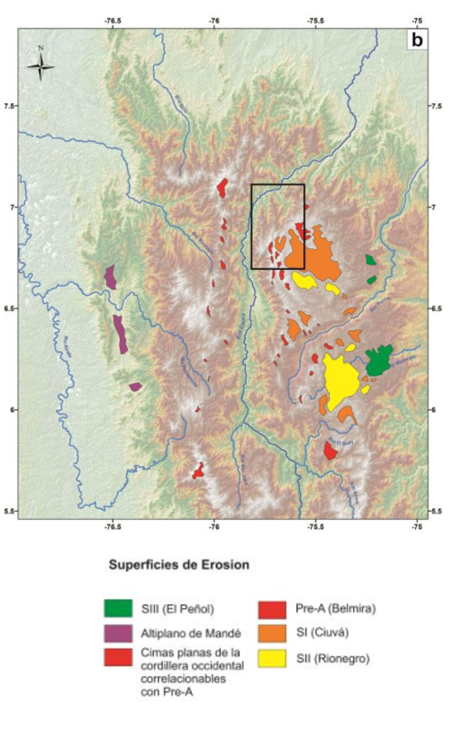
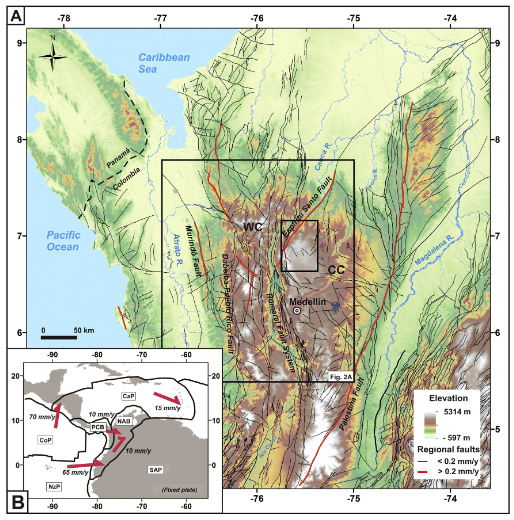
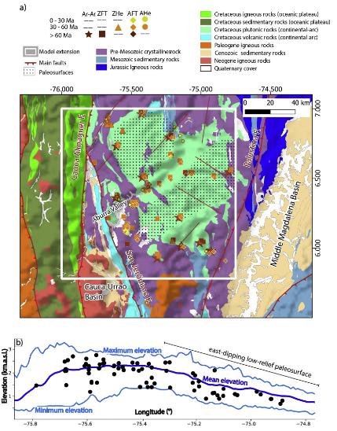
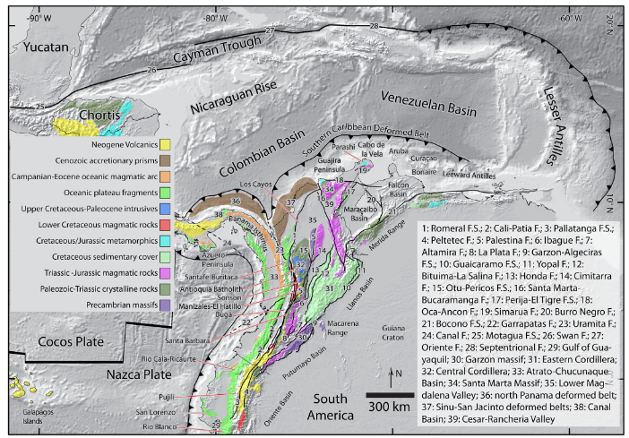
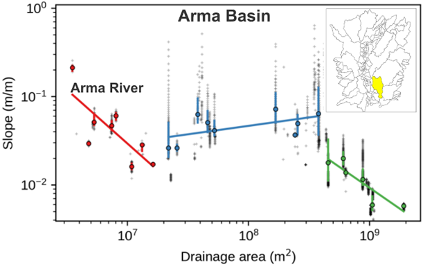
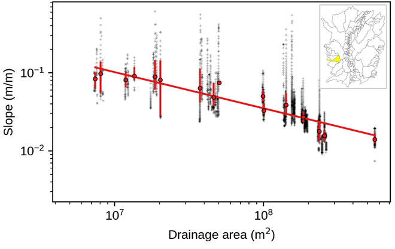

Landscape evolution & natural hazards in the northern Colombian Andes

Edier Aristizábal
Karolina Naranjo

https://geohazards.com.co
River profile analysis
Transport laws
Slope-dependent transport as diffusive because the rate of transport depends on the topographic gradient (solpe). Diffusion-like process tend to reduce relief and fill in local depressions:
$q_s=DS^n$Processes for which the upslope drainage area influences rates of sediment transport are considered advective because the entrained material generally moves along with (and thus is advected by) flows that increase down-stream. Advective processes tend to incise valleys and create relief:
$q_s=KA^mS^n$Where S is local channel slope, A is the contributing drainage area that serves as a proxy for local discharge, K is a variable that incorporates incision process–, substrate-, climate-, and hydrology-dependent variables (Whipple, 2004), and m and n are positive constants that are functions of basin hydrology, channel geometry, and specific incision process (Howard et al., 1994; Whipple and Tucker, 1999; Whipple et al., 2000).
River profile analysis
The change in channel bed elevation at any point along the longitudinal profile with respect to time (dz/dt) reflects a competition between the rates of rock uplift and channel incision with respect to base level.
$\frac{dz(x,t)}{dt}=U(x,t)-E$where U is the rock uplift rate and E erosion rate. If E is change by $q_s$ and $S$ by $dz/dx$ then:
$\frac{dz(x,t)}{dt}=U(x,t)-K(x,t)A^m(\frac{dz(x,t)}{dx})^n$Under steady-state conditions, a perfect balance between rock uplift and incision results in time-invariant topography ($dz/dt=0$).
$\frac{dz}{dx}=(\frac{U}{KA^m})^{1/n}$Coordenada $\chi$
Segun Perron & Royden (2012) performing the integration in the upstream direction from a base level $x_b$ to an observation point $x$ yields an equation for the elevation profile. If U and K are uniform, they can be brought outside the integral, and:
$z(x)=z(x_b)+(\frac{U}{KA_0^m})^{1/n}\int_{x_b}^x\frac{dx}{A(x)^{m/n}}$To create transformed river profiles with units of length on both axes, it is convenient to introduce a reference drainage area, $A_0$
$z(x)=z(x_b)+(\frac{U}{KA_0^m})^{1/n} \chi$
where the longitudinal coordinate is equal to:
$\chi=\int_{x_b}^x(\frac{A_0}{A(x)})^\theta dx$and $A_0$ is an arbitrary scaling area that gives $\chi$ units of length. $\chi$ depends only upon the modern distribution of drainage area, not on topography.
The slope of the χ‐z plot is $k_{sn}$ if $A_0$ is set to unity
Flint´s law
For a steady-state landscape, where river incision rate is equal to the rock uplift rate ($dz/dt=0$) and equation can be solved for equilibrium channel slope (S) at a given drainage area (A)
$S=K_{sn}A^{-\theta}$The coefficient $k_{sn}=(E/K)^{1/n}$ and the exponent θ (m/n) are referred to as the channel steepness index and channel concavity index (the rate of change of local channel slope as a function of increasing drainage area) (Snyder et al., 2000).
The concavity and steepness indices can be extracted from plots of S vs. A along a channel, where θ is the gradient of a best-fit line through the data, and $k_{sn}$ is the y-intercept (Flint, 1974; Tarboton et al., 1989; Kirby and Whipple 2001; Wobus et al., 2006).

Intro
Study area
The northern Andes
Study area
Study area relief
Major basins
Previous studies
Low-relief elevated surfaces
Thermochronologic and geomorphometric constraints on the Cenozoic...
Long-term topographic growth and decay constrained...
Neogene variations in slab geometry...

Geology & Structures
GPS
Regional geological setting
Local geological setting
Faults
Active faults
Profiles SN
Profiles EW
Sections North
Sections Cauca NW
Sections Caldas-Bello
Sections Ovejas
Sections South
Profiles NE
Sections Cauca NS
Sections NW
Sections Ovejas-Espíritu Santo
Sections Espíritu Santo 1
Sections Espíritu Santo 2
Sections NW
Profiles NW
Sections Cauca NS
Sections Rionegro
Sections Bello
Sections Ovejas-Espíritu Santo
Sections Espíritu Santo 1
Sections Espíritu Santo 2
Morphometric index
Assimetry index
Hipsometry index
Hack index
Relief
Sub-basin Nechí
χ plot
$k_{sn}$
Hypsometric plot
Longitudinal river profiles
Slope-Elevation plot
χ plot
Hypsometric plot
Longitudinal river profiles
Slope-Elevation plot
Catchment: Grande
Catchment: Medellín
χ plot
Catchment: Tinitá
Catchment: Cana
Catchment: Guadalupe
Catchment: Porce II
Catchment: Ovejas
Catchment: Piedras Blancas
Catchment: La García
Catchment: Santa Elena
Catchment: La Iguaná
Catchment: Doña Maria
Sub-basin Nare
Hypsometric plot
Longitudinal river profiles
Slope-Elevation plot
Sub-basin Arma
Hypsometric plot
Slope - Elevation plot
Longitudinal profile
$K_{sn}$
$K_{sn}$
χ plot
χ plot
χ plot


Transient catchment
Steady-state catchment
River profiles